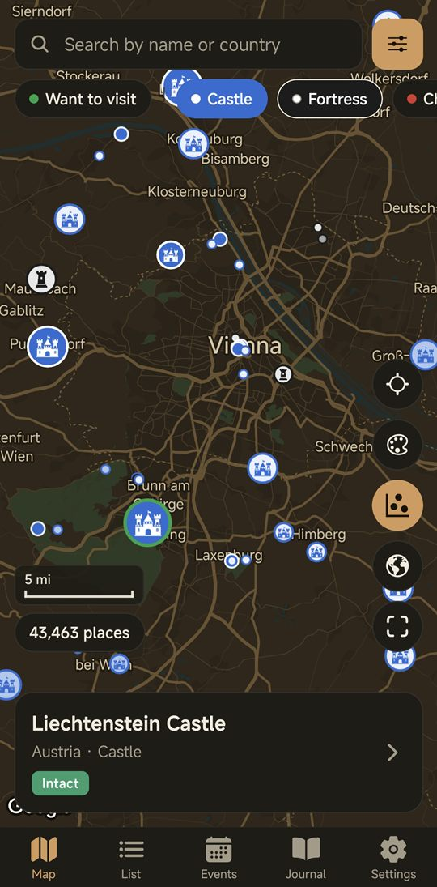
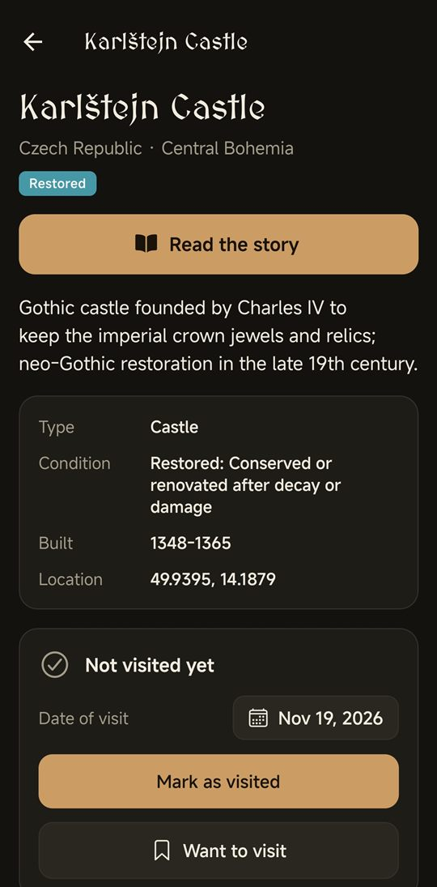
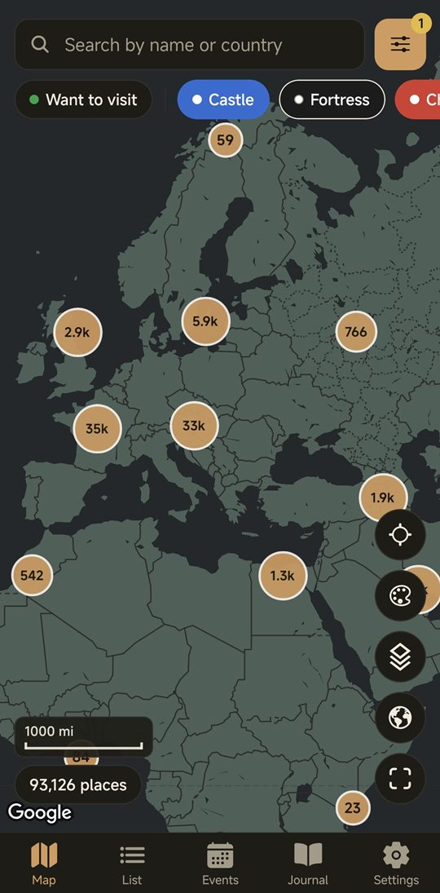
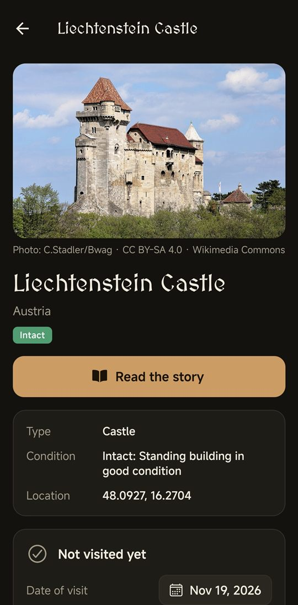

Castele, palate, cetăți și situri arheologice pe o singură hartă
Marcați locurile pe care le-ați vizitat, citiți povestea lor și țineți-vă propriul jurnal al castelelor. Fără reclame, fără cont, fără urmărire.
Aplicație pentru Android. Gratuită pe Google Play.
- 93.000+locuri
- 190țări
- 14limbi
- 0reclame și conturi
Ce face Eldoria
O singură hartă, șase tipuri de locuri
Castele, cetăți, palate și reședințe, conace și curii, orașe și sate istorice, situri arheologice. Filtrați după tip, țară, stare, patrimoniul mondial UNESCO și vizitate. Harta pornește cu castele și cetăți; celelalte tipuri le adăugați din filtre.
O hartă în stil de pergament
Micșorați harta și locurile se grupează în bule numerotate. Măriți harta și fiecare loc primește propria pictogramă medievală, sau un punct acolo unde este aglomerat. În zonele aglomerate, cele mai citite locuri sunt desenate primele.
În apropierea mea
Cele mai apropiate locuri, cu distanțele, și alerte opționale cât timp aplicația este deschisă. Locația dumneavoastră aproximativă rămâne pe telefon.
Citiți povestea
Deschideți un loc și citiți articolul său din Wikipedia direct în aplicație, în oricare dintre cele 14 limbi în care există, inclusiv istoria și legendele. Fotografiile provin de la Wikimedia Commons, cu indicarea autorului.
Jurnalul dumneavoastră de castele
Marcați vizitele cu o dată, adăugați o evaluare cu stele, note și până la trei fotografii. Salvați cu semn de carte locurile pe care doriți să le vizitați. Vedeți vizitele după țară și după tip. Exportați un fișier de copie de siguranță și restaurați-l pe un telefon nou.
Evenimente medievale
O listă de târguri, turniruri și festivaluri viitoare din țările pe care le alegeți, cu un link către pagina organizatorului și către locul din Hărți.
Aplicația în imagini
Capturi de ecran din aplicația pentru Android (interfață în limba engleză).

Măriți harta și fiecare loc primește propria pictogramă. Atingeți o pictogramă pentru a vedea fișa locului. 
Un loc: fotografie cu indicarea autorului, tip, stare, vechime și locație. 
Articolul din Wikipedia în aplicație, cu istorie și legende. 
Legenda hărții: culoarea indică tipul, iar mărimea și estomparea indică starea. 
Evenimente medievale viitoare. 
Jurnalul dumneavoastră: vizite după tip și țară și locurile pe care doriți să le vizitați. 
Șase stiluri de hartă, care se schimbă cu un singur buton. 
Stilul satelit. Când micșorați harta, locurile se grupează în bule numerotate. 
Marcați un loc ca vizitat, cu data, sau salvați-l în lista locurilor pe care doriți să le vizitați. 
Când micșorați harta, locurile se grupează în bule numerotate. Aici: Europa și Africa de Nord. 
Micșorat: America de Nord și America de Sud. 
Un castel în Austria: fotografie cu indicarea autorului, tip și stare. 
Un castel în Slovacia: fotografie, tip, stare și vechime.
Citirea hărții
Culoarea indică tipul locului. Forma și dimensiunea indică ce se cunoaște despre starea sa.
Mare și plin: bine păstrat, restaurat sau reconstruit.
Doar contur: starea nu este cunoscută.
Mic și estompat: ruine sau distrus.
Șase tipuri de locuri
- Castel
- Cetate
- Palat / reședință
- Conac / curie
- Oraș / sat istoric
- Sit arheologic
Starea provine din Wikidata, Wikipedia, Wikimedia Commons și DBpedia. O sursă o indică pentru aproximativ 23 % dintre locuri; pentru încă aproximativ 11 % este dedusă și marcată ca neverificată. Celelalte rămân neclasificate.
Evenimente medievale viitoare
Aceeași listă pe care aplicația o afișează în fila Evenimente. Este alcătuită manual din anunțurile proprii ale organizatorilor și acoperă deocamdată doar câteva țări. Propuneți un eveniment prin Contact, în aplicație.
- Se încarcă evenimentele…
De unde provin datele
Eldoria combină date publice. Locurile pot fi incomplete sau pot conține erori.
- Locuri și nume
- Wikidata (CC0).
- Stare
- Wikidata, categoriile și infocasetele Wikipedia, categoriile Wikimedia Commons și datele infocasetelor din DBpedia (CC BY-SA). Dacă niciuna nu o indică, unele stări sunt deduse și marcate ca neverificate; restul rămân neclasificate.
- Ce locuri apar primele
- Vizualizările articolelor Wikipedia despre locuri în cele 60 de zile dinaintea generării datelor (date Wikimedia despre vizualizările de pagini, CC0).
- Articole
- Wikipedia (CC BY-SA 4.0), prescurtate în aplicație, cu legătură către original.
- Fotografii
- Wikimedia Commons, cu autorul și licența afișate pentru fiecare fotografie.
- Hartă
- Google Maps.
- Design
- Simbolurile marcajelor din pachetul Fantasy RPG GUI de Artsystack; fontul titlurilor MedievalSharp de wmk69 (SIL Open Font License).
Cifrele de pe această pagină reflectă situația din noiembrie 2026.
Întrebări și răspunsuri
Este Eldoria gratuită?
Da. Nu există reclame, achiziții sau cont.
Pe ce dispozitive funcționează?
Pe Android. Aplicația este disponibilă pe Google Play. Nu există versiune pentru iPhone.
Funcționează fără internet?
Harta, articolele și fotografiile necesită conexiune la internet. Vizitele, evaluările, notele și fotografiile dumneavoastră sunt stocate pe telefon, iar ultima listă de evenimente descărcată este păstrată pentru a putea fi vizualizată fără conexiune.
Unde sunt stocate vizitele și recenziile mele?
Doar pe telefonul dumneavoastră. Dezvoltatorul nu le primește niciodată. Puteți exporta un fișier de copie de siguranță și îl puteți restaura pe alt telefon.
Este folosită locația mea?
Doar dacă deschideți În apropierea mea și o permiteți, și doar aproximativ. Este citită pe telefon cât timp aplicația este deschisă, pentru a sorta locurile după distanță, iar aplicația nu o stochează și nu o trimite. Detaliile se găsesc în politica de confidențialitate.
De ce sunt atât de multe locuri „neclasificate”?
Dacă un loc este bine păstrat, restaurat, reconstruit sau ruină, sursele publice indică doar pentru aproximativ 23 % dintre ele. Pentru o parte din restul, Eldoria deduce starea (de exemplu din tipul sitului) și o marchează ca neverificată; unde nici asta nu este posibil, locul rămâne neclasificat.
Un loc este greșit sau lipsește. Ce pot face?
În aplicație, deschideți Setări > Contact sau scrieți la mythicforgeinteractive@gmail.com. Datele provin din Wikidata, astfel că modificările făcute acolo ajung în aplicație printr-o actualizare ulterioară a datelor.
Pot propune un eveniment?
Da, prin același formular Contact. Evenimentele sunt adăugate manual din anunțurile proprii ale organizatorilor.